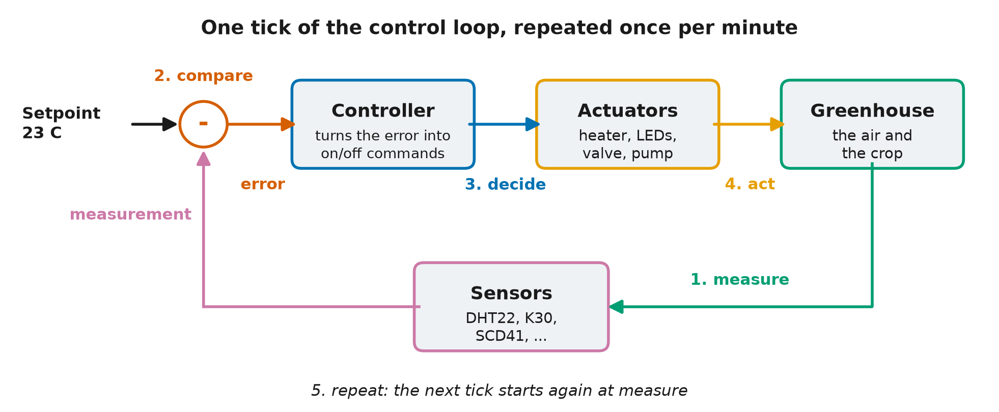
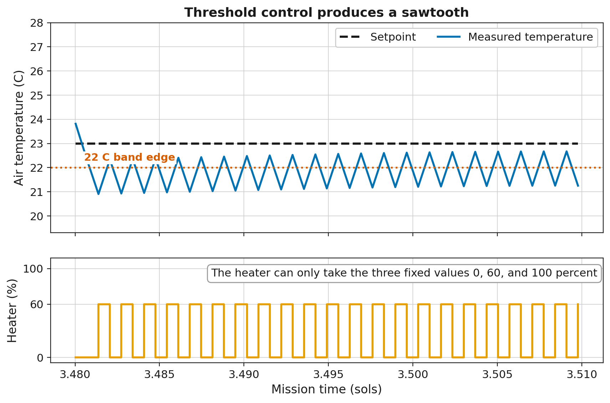
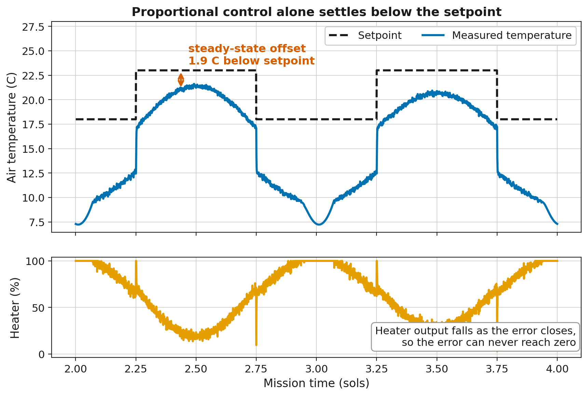
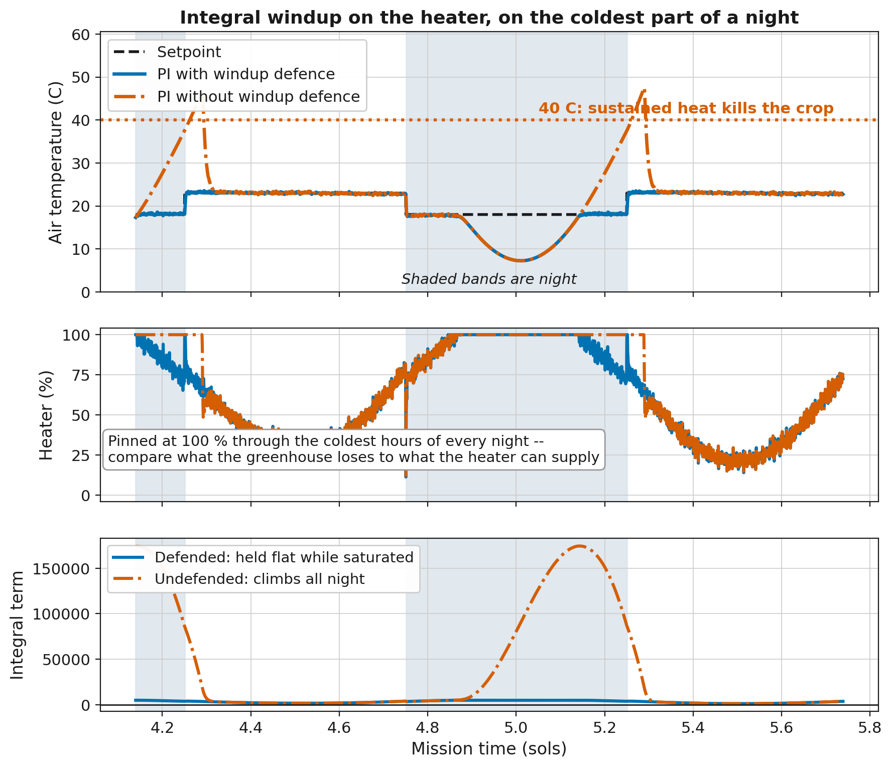

Oct 08, 2026 | 2988 words | 30 min read
18.4. Control Strategies Primer#
18.4.1. From Manual Control to Automatic Control#
In Milestone 2, the greenhouse ran under manual control. An operator reads the sensors, decides what the heater and the valves should do, and moves the sliders. A controller performs the same task automatically, once every tick.
This primer describes (1) the control loop, (2) the acceptance criteria your design must meet, and (3) the four strategies for turning error into action. It also explains how your hardware determines which of these strategies can meet the criteria.
18.4.2. What Is a Control Loop#
Every controller runs the same loop once every tick: measure, compare, decide, act, and repeat.

Fig. 18.1 One tick of the control loop. The comparison subtracts the measurement from the setpoint to produce the error. The controller turns the error into commands, the actuators act on the greenhouse, and the sensors return the next measurement. The five numbered steps are described above: measure, compare, decide, act, and repeat.#
The GHU-2 controller runs this loop. Once per minute, it receives the current sensor readings and outputs a percentage for each actuator.
The strategies below use the same terms:
The setpoint is the target value. The temperature setpoint might be \(23\ ^\circ\text{C}\).
The measurement is the current sensor reading, for example \(21\ ^\circ\text{C}\).
The error is the difference between the setpoint and the measurement.
error = setpoint - measurement
With a setpoint of \(23\ ^\circ\text{C}\) and a measurement of \(21\ ^\circ\text{C}\), the error is \(+2\ ^\circ\text{C}\). A positive error means the greenhouse is too cold, so the controller should heat. A negative error means the greenhouse is too hot.
An actuator is a device that moves the greenhouse environment back toward the setpoint. The heater, a valve, and a pump are actuators.
Feedback closes the loop. The next measurement reflects the action taken on the previous tick, so the loop can correct itself.
Each strategy below is a different rule for the decide step. Each one turns the error into an action in a different way.
Everyday Examples of Control Loops
A home thermostat measures the room, compares it to the dialed setting, and switches the furnace on or off. Cruise control holds a car at a set speed the same way. So does a shower handle: when the water is too cold, you turn it toward hot, and when the water is too hot, you turn it back.
18.4.3. Two Things That Make Control Hard#
Real sensors are not perfect, and real actuators do not act instantly. These two properties of physical systems, noise and lag, shape every strategy that follows.
Noise. Real sensors report the true value plus a small random jitter. The table shows five consecutive readings with the air held at a constant \(21\ ^\circ\text{C}\).
Tick |
True temperature |
Sensor reading |
|---|---|---|
1 |
21.0 C |
21.3 C |
2 |
21.0 C |
20.8 C |
3 |
21.0 C |
21.2 C |
4 |
21.0 C |
20.7 C |
5 |
21.0 C |
21.1 C |
The true temperature is constant, but the reading changes on every tick. A controller that responds to each change spends its output correcting noise instead of holding the temperature. One of the strategies below is especially sensitive to noise.
Lag. When the heater output rises, the air does not warm instantly. The response takes time, and this delay is why aggressive control overshoots. The controller keeps raising its output while the greenhouse is still catching up to the previous increase, so by the time the air reaches the setpoint, the heater is already set too high. The greenhouse has this lag, so a controller tuned too aggressively will oscillate.
Everyday Example of Lag
A shower that warms slowly behaves the same way. The water is too cold, so you turn the handle toward hot, and the water warms only gradually. You turn it hotter still, and by the time the water catches up, it is too hot.
18.4.4. What the Acceptance Test Requires#
Every candidate in your design memo is judged against the same acceptance test. The table lists its criteria. The Milestone 4 practice test checks the same criteria.
Criterion |
Requirement |
|---|---|
Crop survival |
At least 28 of 30 sols |
Temperature tracking |
Mean absolute error below \(2.5\ ^\circ\text{C}\), measured against the day and night setpoints on every tick |
\(CO_2\) control |
Inside \(800\) to \(1000\ \text{ppm}\) on at least 65 % of ticks |
\(CO_2\) safety |
Never 30 consecutive minutes at or above \(5000\ \text{ppm}\) |
Relative humidity |
Inside \(40\) to \(60\%\) on at least 25 % of ticks |
Determinism |
Two runs with the same seed give identical results |
Launch mass |
Glazing, heater, and battery together at most \(600\ \text{kg}\) |
Compare each strategy below against these criteria. Whether a strategy meets them depends on the hardware it runs on.
18.4.5. Strategy 1: Thresholds (Fixed Output Bands)#
if temperature < 18: heater = 100
elif temperature < 22: heater = 60
else: heater = 0
The rule reads temperature, the measured greenhouse temperature in degrees Celsius,
and sets heater, the heater command in percent of full power. A threshold controller
is built from if/elif/else logic, which was introduced in the
Python logic module. The sandbox rule tables use the same
mechanism. Thresholds are simple, readable, and predictable, and real safety systems use
them for these reasons.
Your Milestone 2 analysis showed the drawback of thresholds. GHU-1’s heater was a threshold controller with a single rule, and the telemetry log shows the result: the temperature sawtooths. The heater is either fully on or fully off. The greenhouse overshoots, the heater cuts out, the temperature drifts back down, and the cycle repeats. The standard deviation you calculated in the failure investigation mixes this cycling with the day-night swing and the cold nights, so it overstates the sawtooth. A short daytime window of the temperature trace shows the sawtooth itself.
The effect of the sawtooth depends on the hardware. When the heater has capacity to spare, each cycle is short and shallow. When the heater barely keeps up, the temperature falls further before the rule responds. Test a threshold design on your hardware to find out whether it meets the temperature criterion.

Fig. 18.2 The three-band rule above, run in the project simulation on the as-built hardware. The plot covers about 45 minutes around midday so that individual cycles are visible. Over a full sol, the switching is too rapid to see. The heater switches between 60 % and off, so the temperature cycles between about \(21\) and \(22.5\ ^\circ\text{C}\) around the rule’s \(22\ ^\circ\text{C}\) band edge and does not settle. It never reaches the \(23\ ^\circ\text{C}\) daytime setpoint, because the band edges are fixed numbers in the rule and do not follow the setpoint. Through the coldest hours of the night the as-built heater sits at 100 %, so the rule has nothing to switch and no sawtooth forms.#
Everyday parallel
A cheap thermostat that clicks on and off produces the same sawtooth.
18.4.6. Strategy 2: Proportional (P)#
output = Kp x error (then clamp to [0, 100])
The equation uses three terms.
outputis the command sent to the actuator, in percent of full power, from 0 to 100.erroris the setpoint minus the measurement, as defined above. For the heater, its unit is \(^\circ\text{C}\).Kpis the proportional gain, a constant that the design team chooses.
A proportional controller sets the output in proportion to the error. A small error produces a small output, and a large error produces a large output.
Kp converts error into output, so its unit is percent of output per unit of error, or
\(\%/^\circ\text{C}\) for the heater. With a Kp of 10, an error of \(1\ ^\circ\text{C}\)
commands 10 % heater power, and an error of \(2\ ^\circ\text{C}\) commands 20 %. A large
Kp produces a large output for a small error. A small Kp responds more gradually.
The output is recalculated from the current error on every tick, so the output shrinks
as the error shrinks. When the error reaches zero, the output is zero.
The clamp limits the calculated output to the actuator’s physical range. A heater cannot run at 130 % or at minus 20 %. Any output outside the range 0 to 100 is set to the nearest limit before it is sent.
Proportional control has a limitation on Mars. Holding \(23\ ^\circ\text{C}\) inside while the outside air falls as low as \(-70\ ^\circ\text{C}\) requires the heater to run continuously. A proportional controller’s output falls toward zero as the error closes. The temperature therefore settles slightly below the setpoint, where the remaining error is just large enough to command the heat the environment demands. This gap is called steady-state offset. The offset is proportional to the heat the environment demands, so better insulation makes it smaller.
Everyday Example of Proportional Control
Cruise control set to 65 on a long hill settles at 63 and holds there. The remaining speed error commands the extra throttle that the hill requires.

Fig. 18.3 Proportional control of the GHU-2 heater on the as-built hardware, run in the project simulation. At midday the heater runs well below full power, and the temperature settles about \(2\ ^\circ\text{C}\) below the \(23\ ^\circ\text{C}\) setpoint. That gap is the steady-state offset. The lower plot shows the cause. The output is calculated from the current error, so the output falls as the error closes. The temperature settles where the remaining error commands exactly the heat the environment demands. The night gap is larger for two reasons. First, heat demand is higher at night, so the offset is larger. Second, the heater is pinned at 100 % through the coldest hours. There the gap comes from the heater running out of capacity, and it is separate from the offset. No controller can close that part of the gap. The integral windup section below describes its effect on a controller with an integral.#
18.4.7. Strategy 3: Proportional-Integral (PI)#
integral = integral + error x dt
output = Kp x error + Ki x integral (then clamp)
The first line updates a running total of the error, and the second line calculates the output. The equations use five terms.
integralis the running total of the error over time. The controller stores it between ticks, and it starts at zero. On the right side of the first line,integralis the total from the previous tick. On the left side, it is the updated total. Its unit is error multiplied by time, or \(^\circ\text{C}\cdot\text{s}\) for the heater.dtis the length of one tick in seconds. GHU-2 ticks once per minute, sodtis 60. Multiplying bydtweights each error by how long it lasted.Kiis the integral gain, a constant that the design team chooses. It converts the accumulated error into output, in \(\%/(^\circ\text{C}\cdot\text{s})\) for the heater.Kp,error, andoutputare the same as in proportional control.
Proportional control uses only the current error. The integral term, Ki x integral,
responds to past error. On every tick, the controller multiplies the current error by
dt and adds the result to the running total. An error of \(1\ ^\circ\text{C}\) that
lasts 10 ticks adds \(600\ ^\circ\text{C}\cdot\text{s}\) to the integral. With a Ki of
0.01, that raises the output by 6 %. A small error that persists keeps increasing the
total, which raises the output until the offset is gone. In this way, PI removes the
steady-state offset that proportional control alone cannot remove. For this reason, PI
is the most widely used strategy in industrial control. It has two tunable coefficients,
Kp and Ki.
The same accumulation causes PI’s characteristic failure, called integral windup.
Windup happens when the heater cannot keep up. Your Milestone 2 heat-loss calculation showed which glazing and heater combinations fall short on a cold night. The GHU-1 telemetry log showed what falling short looks like. Through the coldest hours, the heater is pinned at 100 % and the greenhouse is still below its night setpoint. The output is already at its limit, but the integral keeps adding the error on every tick. It accumulates a demand that the heater cannot deliver.
At sunrise the error goes away, but the accumulated term remains. It holds the heater at full output long after the greenhouse has warmed up, and the temperature overshoots. On the as-built glazing and heater, a PI heater with no defense peaks at \(47.5\ ^\circ\text{C}\), above the \(40\ ^\circ\text{C}\) lethal limit. It stays above that limit for 47 to 48 minutes each morning. Sustained heat kills the crop after 60 minutes, so the crop survives with about 12 minutes to spare.
The standard defense is a single condition: stop adding to the integral while the output is saturated, or pinned at its limit. If your design uses an integral, your flowchart must show the windup defense.

Fig. 18.4 Integral windup on the GHU-2 heater with the as-built glazing and heater, run in the project simulation over about one and a half sols. The middle plot shows the cause. The heater is pinned at 100 % through the coldest hours of the night, so the error remains no matter what the controller commands. The lower plot shows the result of accumulating anyway. The undefended integral climbs to about \(175{,}000\ ^\circ\text{C}\cdot\text{s}\) overnight, and the defended integral stays near zero on the same scale. The upper plot shows where the stored demand goes at sunrise. The undefended controller overshoots past the \(40\ ^\circ\text{C}\) lethal line, and the defended controller tracks the setpoint. The two controllers are identical except for one condition around the integral update.#
How often the heater saturates depends on the hardware. On the as-built glazing and heater, measured over a 30-sol mission, a defended PI heater sits at 100 % for about 28 % of all ticks and about 56 % of night ticks. On this hardware, windup is a normal nightly condition. On hardware with heating capacity to spare, the same controller sits at 100 % for under 1 % of ticks. A design with an integral needs the defense on any hardware. The hardware determines how much the rest of the design depends on it.
18.4.8. Strategy 4: PID#
derivative = (error - previous_error) / dt
output = Kp x error + Ki x integral + Kd x derivative (then clamp)
The equations add three terms to those of PI.
previous_erroris the error from the previous tick. The controller stores it between ticks.derivativeis the rate of change of the error, in \(^\circ\text{C/s}\) for the heater. It is positive when the error is increasing and negative when the error is decreasing.Kdis the derivative gain, a constant that the design team chooses, in \(\%/(^\circ\text{C/s})\) for the heater.
The derivative term, Kd x derivative, responds to the rate of change of the error.
When the greenhouse warms quickly toward the setpoint, the error falls quickly, so the
derivative is negative and the derivative term subtracts from the output. The output
drops before the temperature reaches the setpoint, which reduces overshoot.
The limitation of the derivative is the noise described earlier. The derivative is calculated from the difference between consecutive readings, and sensor noise dominates that difference. With a noisy sensor, the derivative term responds to changes that are not in the true signal, and the actuator follows those changes.
The sensors in this project are noisy. A derivative term is permitted but not required. A design that includes one must demonstrate in Milestone 4 that it measurably improves performance over the same design without it.
Everyday parallel
Lifting off the gas before a stop sign, instead of braking at the line, works the same way.
18.4.9. Mixing Strategies#
A design controls four actuators, and each actuator can use a different strategy. For example, PI for the heater, proportional control with a safety clamp for the CO2 valve, and plain thresholds for the irrigation pump. Choose a strategy for each actuator, and justify each choice.
Two constraints from the mission brief affect the design:
The CO2 valve is one-way. Software cannot remove CO2, so an output that calculates as negative must be clamped to zero. An overshoot cannot be corrected, so approach the band conservatively from below.
The primary CO2 sensor fails intermittently. Your M2 analysis established this and measured the cost of trusting it. Any design that reads CO2 must choose between the two readings on every tick, and your memo must state the selection rule. The M2 divergence analysis suggests one.
18.4.10. Hardware and Strategy#
Your Milestone 2 hardware choice and your controller strategy depend on each other. Each glazing and heater combination sets the problem the controller has to solve. Each strategy handles some of those problems better than others. The list below describes three of these connections.
Heating margin: A heater that cannot cover the coldest nights saturates. This makes windup routine and sets a lower limit on the temperature error that no strategy can remove. More insulation or a larger heater removes the saturation but adds mass.
Light: Glazing that passes less sunlight leaves the grow LEDs to make up the difference, especially in a dust storm. On dim glazing, an LED rule that switches off whenever the greenhouse runs warm can leave the crop without enough light.
Energy: Every watt that the heater and the LEDs draw on the worst sol adds battery mass. Insulation lowers the heating energy. Glazing that blocks light raises the LED energy.
Each candidate in your design memo pairs a hardware selection with a controller strategy. The sandbox runs on any hardware from the menu, so you can run a threshold rule table on each glazing before you commit. For example, this command runs the sandbox with aerogel glazing and a 3000 W heater.
python run_sandbox.py --glazing aerogel --heater 3000
18.4.11. Controller State#
A threshold controller stores nothing between ticks. PI stores the integral, and PID also stores the previous error. Control functions run once per tick, so a value needed on a later tick cannot be rebuilt from the current reading alone. The controller must store the value on one tick and read it back on the next.
In this project, those values are held in a dictionary named state, which is passed to
the control functions on every tick. Read the previous value from it, calculate the
new value, and write the new value back so it is available on the next tick. The
Milestone 4 template shows the exact lines. For the design memo, your flowchart must
show what is stored and when it is updated.
18.4.12. What Good Tuning Looks Like#
Kp, Ki, and Kd have no universal values. You find them by experiment in
Milestone 4. The table lists common behaviors and their likely causes.
You observe |
Likely cause |
|---|---|
Slow sawtooth oscillation |
Thresholds or |
Temperature settles below setpoint at night, heater below 100 % |
P-only offset. Consider adding an integral. |
Temperature below setpoint on the coldest nights, heater at 100 % |
Heater saturation. Tuning cannot fix it. Only a change of hardware (glazing or heater) can. |
Big overshoot just after sunrise |
Integral windup. Add windup defense. |
Output changes with every reading |
Derivative is amplifying sensor noise. |
Once you identify the cause, the fix is usually a single change. Milestone 4 tuning starts from the table below.
Symptom |
Likely fix |
|---|---|
Oscillates around the setpoint |
Lower the gain |
Never quite reaches the setpoint |
Add integral action |
Actuator changes state constantly |
Filter the reading, or drop the derivative |
Sustained overshoot after a cold night |
Check your windup defense |
18.4.13. Where the Control Loop Appears#
The control loop in this project is used wherever a value must be held steady. Examples include home thermostats, automotive cruise control, a drone holding its hover, an oven holding its temperature, an insulin pump regulating blood glucose, and the life-support system on the International Space Station that maintains the air its crew breathes.